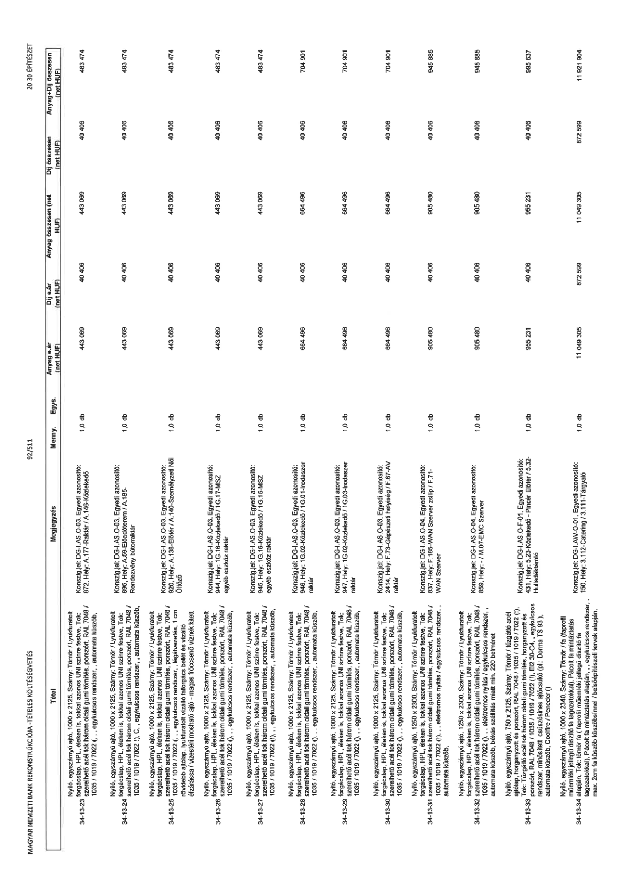

| Tétel | Megjegyzés | Menny. | Egys. | Anyag e.ár (net HUF) | Díj e.ár (net HUF) | Anyag összesen (net HUF) | Díj összesen (net HUF) | Anyag+Díj összesen (net HUF) |
|---|---|---|---|---|---|---|---|---|
| 34-13-23 | Nyíló, egyszárnyú ajtó, 1000 x 2125, Szárny: Tömör / Lyukfúratott forgácslap, HPL éleken is, tokkal azonos UNI színre festve, Tok: szerelhető acél tok három oldali gumi tömítés, porszórt, RAL 7048 / 1035 / 1019 / 7022 (...) , egykulcsos rendszer,, automata küszöb,; Konszig.jel: DG-LAS-O-03, Egyedi azonosító: 872, Hely: A.177-Raktár / A.146-Közlekedő | 1,0 | db | 443 069 | 40 405 | 443 069 | 40 405 | 483 474 |
| 34-13-24 | Nyíló, egyszárnyú ajtó, 1000 x 2125, Szárny: Tömör / Lyukfúratott forgácslap, HPL éleken is, tokkal azonos UNI színre festve, Tok: szerelhető acél tok három oldali gumi tömítés, porszórt, RAL 7048 / 1035 / 1019 / 7022 (...) , egykulcsos rendszer,, automata küszöb,; Konszig.jel: DG-LAS-O-03, Egyedi azonosító: 895, Hely: A.58-Ebédlőterem / A.185-Rendezvény bútortár | 1,0 | db | 443 069 | 40 405 | 443 069 | 40 405 | 483 474 |
| 34-13-25 | Nyíló, egyszárnyú ajtó, 1000 x 2125, Szárny: Tömör / Lyukfúratott forgácslap, HPL éleken is, tokkal azonos UNI színre festve, Tok: szerelhető acél tok három oldali gumi tömítés, porszórt, RAL 7048 / 1035 / 1019 / 7022 (...) , egykulcsos rendszer,, automata küszöb,; Konszig.jel: DG-AS-O-03, Egyedi azonosító: 920, Hely: A.138-Előtér / A.140-Személyzeti Női Öltöző | 1,0 | db | 443 069 | 40 405 | 443 069 | 40 405 | 483 474 |
| 34-13-26 | Nyíló, egyszárnyú ajtó, 1000 x 2125, Szárny: Tömör / Lyukfúratott forgácslap, HPL éleken is, tokkal azonos UNI színre festve, Tok: szerelhető acél tok három oldali gumi tömítés, porszórt, RAL 7048 / 1035 / 1019 / 7022 (...) , egykulcsos rendszer,, automata küszöb,; Konszig.jel: DG-LAS-O-03, Egyedi azonosító: 944, Hely: 1.G.16-Közlekedő / 1.G.17-MSZ egyéb eszköz raktár | 1,0 | db | 443 069 | 40 405 | 443 069 | 40 405 | 483 474 |
| 34-13-27 | Nyíló, egyszárnyú ajtó, 1000 x 2125, Szárny: Tömör / Lyukfúratott forgácslap, HPL éleken is, tokkal azonos UNI színre festve, Tok: szerelhető acél tok három oldali gumi tömítés, porszórt, RAL 7048 / 1035 / 1019 / 7022 (...) , egykulcsos rendszer,, automata küszöb,; Konszig.jel: DG-AS-O-03, Egyedi azonosító: 945, Hely: 1.G.15-Közlekedő / 1.G.15-MSZ egyéb eszköz raktár | 1,0 | db | 443 069 | 40 405 | 443 069 | 40 405 | 483 474 |
| 34-13-28 | Nyíló, egyszárnyú ajtó, 1000 x 2125, Szárny: Tömör / Lyukfúratott forgácslap, HPL éleken is, tokkal azonos UNI színre festve, Tok: szerelhető acél tok három oldali gumi tömítés, porszórt, RAL 7048 / 1035 / 1019 / 7022 (...) , egykulcsos rendszer,, automata küszöb,; Konszig.jel: DG-LAS-O-03, Egyedi azonosító: 946, Hely: 1.G.02-Közlekedő / 1.G.01-Irodaszer raktár | 1,0 | db | 664 496 | 40 405 | 664 496 | 40 405 | 704 901 |
| 34-13-29 | Nyíló, egyszárnyú ajtó, 1000 x 2125, Szárny: Tömör / Lyukfúratott forgácslap, HPL éleken is, tokkal azonos UNI színre festve, Tok: szerelhető acél tok három oldali gumi tömítés, porszórt, RAL 7048 / 1035 / 1019 / 7022 (...) , egykulcsos rendszer,, automata küszöb,; Konszig.jel: DG-LAS-O-03, Egyedi azonosító: 947, Hely: 1.G.02-Közlekedő / 1.G.03-Irodaszer raktár | 1,0 | db | 664 496 | 40 405 | 664 496 | 40 405 | 704 901 |
| 34-13-30 | Nyíló, egyszárnyú ajtó, 1000 x 2125, Szárny: Tömör / Lyukfúratott forgácslap, HPL éleken is, tokkal azonos UNI színre festve, Tok: szerelhető acél tok három oldali gumi tömítés, porszórt, RAL 7048 / 1035 / 1019 / 7022 (...) , egykulcsos rendszer,, automata küszöb,; Konszig.jel: DG-LAS-O-03, Egyedi azonosító: 2414, Hely: F.73-Gépészeti helyiség / F.87-AV raktár | 1,0 | db | 664 496 | 40 405 | 664 496 | 40 405 | 704 901 |
| 34-13-31 | Nyíló, egyszárnyú ajtó, 1250 x 2300, Szárny: Tömör / Lyukfúratott forgácslap, HPL éleken is, tokkal azonos UNI színre festve, Tok: szerelhető acél tok három oldali gumi tömítés, porszórt, RAL 7048 / 1035 / 1019 / 7022 (...) , elektromos nyitás / egykulcsos rendszer,, automata küszöb,; Konszig.jel: DG-LAS-O-04, Egyedi azonosító: 837, Hely: F.185-WAN Szerver zsilip / F.71-WAN Szerver | 1,0 | db | 905 480 | 40 405 | 905 480 | 40 405 | 945 885 |
| 34-13-32 | Nyíló, egyszárnyú ajtó, 1250 x 2300, Szárny: Tömör / Lyukfúratott forgácslap, HPL éleken is, tokkal azonos UNI színre festve, Tok: szerelhető acél tok három oldali gumi tömítés, porszórt, RAL 7048 / 1035 / 1019 / 7022 (...) , elektromos nyitás / egykulcsos rendszer,, automata küszöb, békás szállítás miatt min. 220 belméret; Konszig.jel: DG-AS-O-04, Egyedi azonosító: 859, Hely: / M.07-EMC Szerver | 1,0 | db | 905 480 | 40 405 | 905 480 | 40 405 | 945 885 |
| 34-13-33 | Nyíló, egyszárnyú ajtó, 750 x 2125, Szárny: Tömör / szigetelt acél ajtólap, horganyzott és porszórt, RAL 7048 / 1035 / 1019 / 7022 (!), Tok: Tűzgátló acél tok három oldali gumi tömítés, horganyzott és porszórt, RAL 7048 / 1035 / 1019 / 7022 (!), El2 30-C4, egykulcsos rendszer, minősített csúszósínes ajtócsukó (pl.: Dorma TS 93 ),, automata küszöb,, Cooffre / Peneder (); Konszig.jel: DG-AS-O-F-01, Egyedi azonosító: 431, Hely: 5.23-Közlekedő - Pincér Előtér / 5.32-Hulladéktároló | 1,0 | db | 955 231 | 40 406 | 955 231 | 40 406 | 995 637 |
| 34-13-34 | Nyíló, egyszárnyú ajtó, 1000 x 2340, Szárny: Tömör / fa (laprofil műemléki jellegű díszítő fa tagozatokkal), Pácolt fa mintázatás alapján, Tok: tömör fa ( laprofil műemléki jellegű díszítő fa tagozatokkal), Pácolt fa mintázatás alapján, , egykulcsos rendszer, max. 2cm fa küszöb küszöbsínnel / belsőépítészeti tervek alapján,; Konszig.jel: DG-LAW-O-01, Egyedi azonosító: 150, Hely: 3.112-Catering / 3.111-Tárgyaló | 1,0 | db | 11 049 305 | 872 599 | 11 049 305 | 872 599 | 11 921 904 |
